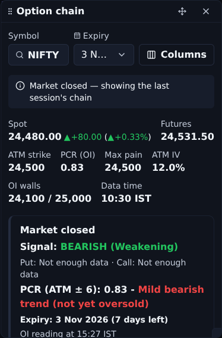
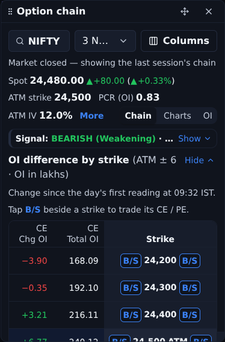
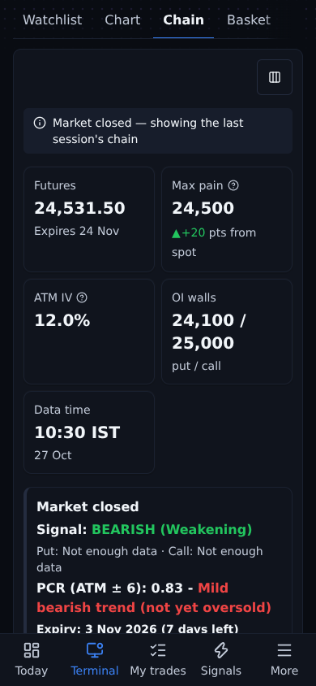
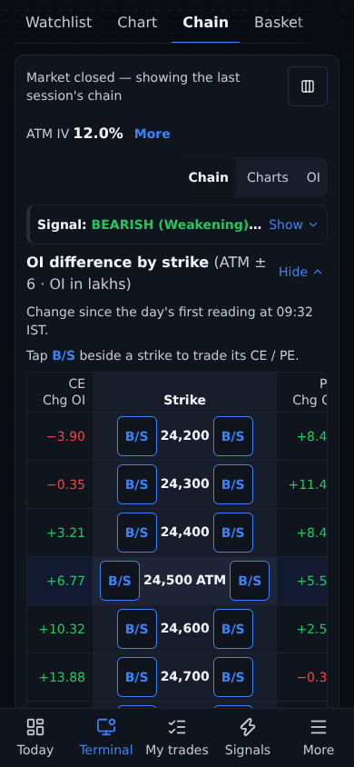

Market closed, Trade's banner "BEARISH (Weakening)", the Net Diff table ATM ± 6. Made-up figures. Measured from the panel's top (e2e/terminal-v2.e2e.ts, "the compact chain panel").
| Width | OI table first row: before | after | Chain table first row: before | after |
|---|---|---|---|---|
| 1440 (panel about 430 px) | 863 px | 411 px | 1,360 px | 878 px |
| 390 phone (Chain tab) | 1,116 px | 394 px | 1,505 px | 669 px |
| 360 phone (Chain tab) | 1,140 px | 394 px | 1,529 px | 669 px |



